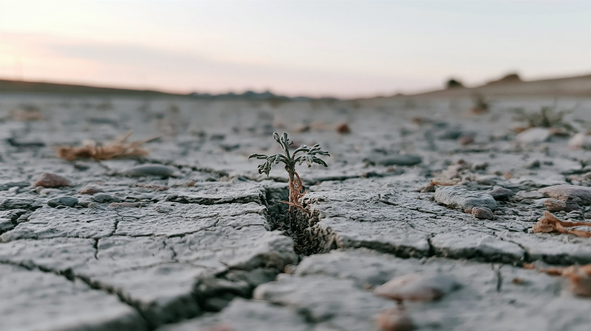
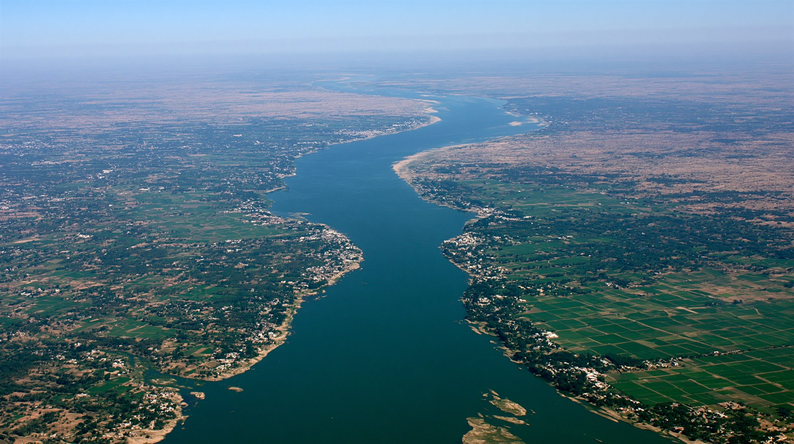

01 なぜ今、水が「武器」になるのか
世界には国境を越えて流れる川の流域が約300あり、世界人口のおよそ4割がそれに依存している。 気候変動による干ばつ、人口増、食料・電力需要の高まりが重なり、水は急速に「奪い合う資源」へと変わった。
対立の基本構造はどこでも同じだ。上流の国はダムを建てて水と電力を握り、 下流の国はそれを「存立にかかわる脅威」と受け止める。 ミュンヘン安全保障報告は2026年、水を初めて主要な地政学リスクとして取り上げ、 ナイル・インダス・ユーフラテス＝チグリス・中央アジアを高リスク地域に挙げた。 国連も2026年1月、世界が「水の破産」の時代に入ったと警告している。
砲弾は飛ばないが、ダムの放流量ひとつが数千万人の生活を左右する。だからこれは「静かな戦争」と呼ばれる。

02 4つの火種 — 世界の主要な対立流域
03 タイムライン — 直近の動き
エチオピア、GERDの貯水を完了
14年・約50億ドルをかけたアフリカ最大の水力発電ダムが貯水を完了。下流のエジプト・スーダンは干ばつ時の運用ルールが定まらないまま既成事実化が進むことに反発。
インド、インダス水条約を停止 — 65年で初
カシミールでのテロ攻撃を受け、インドが1960年締結の水条約の停止を宣言。3度の戦争を越えて維持されてきた枠組みが初めて止まった。パキスタンは「水の遮断は戦争行為」と警告した。
エチオピア、GERDを正式に稼働（落成式）
近隣国の首脳も出席し落成式を開催。アフリカ最大、最大出力5,150メガワットの水力発電が本格稼働。下流との法的合意は依然不在のまま。
ナイル増水でエジプト・スーダンが洪水被害
記録的増水で農地や村が浸水し、スーダンでは1,200世帯超が避難。エジプトは「GERDの無謀な一方的放流」と非難、エチオピアは記録的モンスーンが原因と反論した。
国連「水の破産」を警告／ミュンヘン報告が水を主要リスクに
国連の報告書が、世界が「水の破産」の時代に入ったとして抜本改革を求めた。ミュンヘン安全保障報告2026も、水を初めて主要な地政学リスクとして明記した。
「水と安全保障の連結」が常態に
インド・パキスタンの条約は復活せず、ナイルの合意も不在。水を外交・安全保障のカードに使う動きが各地で常態化し、気候変動がそれをさらに加速させている。

04 各立場の主張
| 立場 | 基本姿勢 | 強調点 | 課題・懸念 |
|---|---|---|---|
| 上流国 | 開発の権利・主権 | 電力・発展・洪水調整 | 既成事実化・合意回避 |
| 下流国 | 存立の危機 | 既得の水利権・生存 | 一方的運用への脆弱性 |
| インド | 水と安保の連結 | 条約停止という前例 | 緊張の固定化・核リスク |
| 国際機関 | 枠組みの空白に警鐘 | データ共有・運用ルール | 法的枠組み・執行力の欠如 |
05 データ・統計
下流国の特定河川への依存度
エジプトは再生可能水資源の約97%をナイルに依存。出典: CFR / 各種報道
象徴的なダム・開発の規模
越境河川とガバナンスの空白
越境流域は約300、依存人口は世界の約4割。条約締約国は38カ国どまり。出典: 国連 / Nature Communications 2025